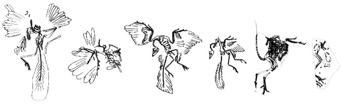
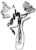
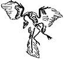
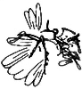
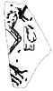
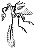
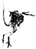
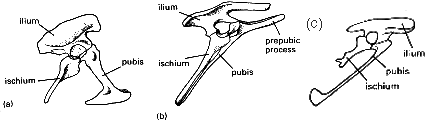

Todo sobre Archaeopteryx
por Chris Nedin[Referencias Editadas: 10 de junio de 2002]


Contenido
- Introducción
- Especímenes de Archaeopteryx
- Características de Archaeopteryx
- Archaeopteryx y aves modernas, ¿solo variación dentro de la misma especie?
- Ratitas
- El relato de dos pelvises
- Volar o no volar
- El linaje de Archaeopteryx
- Protoavis
- Conclusiones
- Agradecimientos
- Referencias
Introducción
Archaeopteryx lithographica ("ala antigua de la piedra de impresión").
Nombrado en honor a la piedra caliza en la que fue descubierto. La piedra es una piedra caliza lisa y de grano fino que se utilizó en la impresión. Extraída de las canteras de la zona de Solnhofen y alrededores en Alemania. Se formó en el fondo de una laguna hipersalina durante el Jurásico Superior, hace aproximadamente 150 millones de años.
Especímenes de Archaeopteryx
Se han encontrado 8 especímenes de Archaeopteryx (7 especímenes reales y una pluma). Estos hallazgos están documentados cronológicamente (por descripción) a continuación.
- La Pluma
Encontrada en 1860 cerca de Solnhofen y reveladora cuando fue descrita por H. v Meyer en 1861. La sorpresa no fue la antigüedad del fósil, ya que se conocían varias huellas de dinosaurios ornitópodos erróneamente atribuidas a aves del Triásico, sino el detalle que se preservó.
- El Especimen de Londres

Encontrado en 1861, cerca de Langenaltheim. Probablemente el mejor conocido (junto con el espécimen de Berlín). Su descubrimiento fue anunciado por H. v Meyer en 1861 y el espécimen fue posteriormente comprado por el Museo Británico de Historia Natural en Londres (bajo la instrucción de Richard Owen). Costó 700 libras esterlinas - una pequeña fortuna en aquellos tiempos, pero por ese precio Owen también recibió poco más de mil otros fósiles de Solnhofen. El espécimen fue vendido por el coleccionista aficionado y médico local Carl Haberlein, quien lo había recibido a cambio de pago por tratamiento médico. Owen describió el espécimen en 1863. Él vio de inmediato que era un hallazgo importante y reconoció que representaba una forma transicional - pero no en el sentido de "Darwin". Owen era un firme "evolucionista", sin embargo no creía en el modelo de evolución de Darwin. Curiosamente, Huxley, quien era un firme "darwinista", falló en reconocer la verdadera importancia del fósil y simplemente comentó sobre él como un "ave reptiliana". No fue hasta que se hicieron comparaciones cercanas con el dinosaurio Compsognathus que se realizó el verdadero valor de Archae. - El Especimen de Berlín

Encontrado en 1877 cerca de Blumenberg. Este fue un espécimen mejor que el de Londres, principalmente porque tenía una cabeza completa, aunque mal aplastada, y fue adquirido rápidamente por el museo de Berlín. Fue vendido a ellos por el hijo de Carl Haberlein (hablar de mantenerlo en la familia!). Fue descrito por W. Dames en 1884.
- El Especimen de Maxburg

Encontrado en 1958 cerca de Langenaltheim (igual que el Especimen de Londres). Este espécimen es solo del torso y es el único espécimen que aún está en manos privadas. En 1992, después de la muerte de su descubridor y propietario Eduard Opitsch, se descubrió que el espécimen estaba perdido y se cree que fue vendido secretamente (Abbott 1992). Su paradero permanece desconocido. El espécimen fue descrito por Heller en 1959.
- El Especimen de Haarlem o Teyler

Este espécimen fue en realidad encontrado cerca de Reidenburg en 1855, 5 años antes de la pluma! Yacía en un museo después de ser clasificado como Pterodactylus crassipes por H. v Meyer en 1875. Curiosamente, Mayer lo describió como teniendo una membrana de vuelo a diferencia de cualquier otro pterodáctilo conocido, ahora sabemos por qué! Un reexamen del fósil en 1970 por Ostrom reveló plumas y su verdadera identidad.
- El Especimen de Eichstatt

Encontrado cerca de Workerszell en 1951, fue descrito por P. Wellnhofer en 1974. Este es el más pequeño de todos los especímenes, siendo aproximadamente 2/3 del tamaño de los demás. También difiere en otros aspectos como la estructura dental y los huesos de hombro mal osificados. Se ha sugerido que esto es un género separado, sin embargo las diferencias también pueden atribuirse a la posible etapa juvenil del animal y/o un nicho de alimentación diferente. Sin embargo, este espécimen tiene la cabeza mejor preservada, de la cual se describió la litania de características craneales reptilianas de Archae. En este momento aún reside dentro de A. lithographica.
- El Especimen de Solnhofen

Encontrado en la década de 1960 cerca de Eichstatt por un trabajador turco. Primero identificado como Compsognathus, por un coleccionista aficionado, sin embargo, un examen más detallado mostró que los brazos eran demasiado largos para el tamaño del cuerpo y la preparación reveló trazas de plumas. Descrito por P. Wellnhofer en 1988.
- El Especimen de Solnhofen-Aktien-Verein
Un nuevo espécimen fue descrito por Wellnhofer (1993), pero la descripción está en alemán y por lo tanto la información es limitada. El espécimen ha sido clasificado como una nueva especie, Archaeopteryx bavarica, y se ha reportado que posee un esternón pequeño osificado, así como impresiones de plumas.
Características del Archaeopteryx
Se ha hecho mucho ruido en círculos pseudocientíficos sobre la posición de Archae dentro del esquema evolutivo de las cosas. El "argumento" habitual que se presenta es que Archae no puede ser un fósil transicional entre aves y dinosaurios porque es un ave. Esta línea simplista contradice el hecho de que, si bien Archae efectivamente se clasifica como un ave, se ha hecho así en función de 4 caracteres principales, 2 de los cuales no son exclusivos de las aves. Esta clasificación ignora el hecho de que Archae posee numerosos caracteres que sí son únicos, únicos en el sentido de que no son poseídos por las aves. Las afinidades aviares de Archae son aceptables en función de los siguientes 4 caracteres principales:
Características aviares del Archaeopteryx
- 1) Plumas.
-
Las plumas son la característica diagnóstica de las aves modernas. Este es uno de los principales criterios para clasificar a Archae como un ave, ya que ningún otro animal moderno tiene plumas. La posesión de plumas es una característica de las aves, así que ¡golpea una para las aves! Sin embargo, a finales de 1996, un descubrimiento en China podría cambiar esta visión. Un pequeño dinosaurio terópodo Sinosauropteryx (Chen et al. 1998) fue encontrado con lo que parecen ser plumas preservadas a lo largo de la espalda. La identificación de las estructuras es dudosa sin embargo, (por ejemplo, Unwin 1998), con algunos dudando de que las estructuras sean plumas.
PARA INFORMACIÓN
Se han encontrado dinosaurios con plumas
Se han encontrado recientemente dos especies de dinosaurio en el noreste de China que poseen plumas (Qiang et al. 1998). Protoarchaeopteryx robusta y Caudipteryx zoui muestran rectrices, rectrices y plumas plumosas impresiones. Además, no son aves, careciendo de un dedo gordo invertido (mirando hacia atrás) (véase el número 2 a continuación) y un contacto escamoso cuadratojugal, teniendo un cuadratojugal unido al cuadrato por un ligamento y un proceso reducido o ausente del isquion. Estos y otros caracteres agrupan a Protoarchaeopteryx y Caudipteryx con coelurosaurios maniraptóranos en lugar de aves.
[Nota de Sistemática (de Padian 1998): Los sistemáticos definen los nombres de los organismos por su ascendencia, en este caso las aves (Aves) consisten en Archaeopteryx más las aves vivas y todos los descendientes de su ancestro común más reciente. Las aves son diagnosticadas por características únicas que solo ellas poseen y que se heredan de ese ancestro común. Incluso si las plumas son compartidas por un grupo más amplio que solo las aves, las aves siguen siendo definidas como Archaeopteryx y parientes posteriores. Protoarchaeopteryx y Caudipteryx no son aves aunque tengan plumas porque el conjunto de caracteres morfológicos que poseen los marca como pertenecientes al dinosaurio coelurosaurio maniraptorano.]
Parece que las plumas ya no pueden usarse como una característica única de las aves.
Para una discusión de los dinosaurios con plumas vaya a Jeff Poling's Dinosauria page.
- 2) Hallux oponible (dedo gordo).
-
Esto también es un carácter de las aves y no de los dinosaurios. Aunque los dedos gordos oponentes se encuentran en otros grupos, no son, por lo que sé, encontrados en dinosaurios. Un dedo gordo invertido se encuentra en algunos dinosaurios, sin embargo, y la condición se acerca en algunos dinosaurios terópodos.
- 3) Furcula (hueso de horquilla) formada por dos clavículas fusionadas juntas en la línea media.
-
Ahora empezamos a entrar en terreno inseguro. Solía pensarse que la posesión de una furcula distinguía a las aves de los dinosaurios. De hecho, hasta hace poco incluso las clavículas eran escasas y lejanas incluso en dinosaurios terópodos (el grupo sugerido más cercano a las aves y del cual evolucionaron las aves - véase Ostrom 1976). Sin embargo, se ha encontrado que los dinosaurios terópodos tenían de hecho clavículas (por ejemplo, Bryant & Russell 1993) y se han encontrado en varias especies, por ejemplo, Segisaurus, Velociraptor, Euparkeria, Ornithosuchus, Saltoposuchus, Ticinosuchus. También, Chure & Madson (1996) reportaron furculas en un dinosaurio alosaúrido no maniraptorano.
Se ha encontrado que las clavículas a menudo son pequeñas y poco osificadas. Esto no es sorprendente, ya que son de poca ventaja evolutiva para su dinosaurio terópodo promedio. Sin embargo, las aves también muestran esta variación en osificación, especialmente entre los carnívoros y algunos periquitos, las clavículas están reducidas o incluso faltan. Por lo tanto la aparente ausencia de clavículas en algunos dinosaurios terópodos puede deberse a una mala osificación en lugar de ausencia real. Sin embargo, las furculas han sido encontradas en algunos dinosaurios terópodos, a saber los Oviraptorosauria (Barsbold et al. 1990, Bryant & Russell 1993), por ejemplo Oviraptor y Ingenia. Así las furculas no parecen ser diagnósticas para las aves y ciertos miembros del grupo sugerido más cercano a las aves ahora parecen poseer furculas por lo que es un carácter neutral.
Una crítica comúnmente citada de esto es que la mayoría de los dinosaurios terópodos listados aquí posteriorizan a Archae. Sin embargo, ninguno de estos se reclama como el ancestro de todos modos, y Eupakeria es una forma triásica. La presencia de clavículas muestra que este carácter es una característica de los dinosaurios terópodos y por lo tanto probablemente estaba presente en terópodos tempranos.
- 4) Púbis alargado y dirigido hacia atrás.
-
Esto es una característica de las aves, pero también es una característica de algunos dinosaurios terópodos por lo que no es diagnóstico de las aves - otro carácter neutral. Sin embargo, los tallos púbicos de Archaeopteryx y dromaeosaurios (un grupo de dinosaurios terópodos que se cree están estrechamente vinculados a las aves) comparten una sección transversal transversal en forma de placa, ligeramente inclinada que no se encuentra en ningún otro arcosaurio.
Características reptilianas del Archaeopteryx
- 5) La premaxila y la maxila no están cubiertas por cuernos.
-
Esto es un lenguaje elegante para "no tiene pico". La premaxilar no tiene una cubierta queratinizada, por lo que Archaeopteryx no tiene pico. El pico se produce mediante el proceso de 'cornificación', que implica la capa de moco de la epidermis (Romanoff 1960) y, por lo tanto, su formación es independiente de la formación del hueso de la mandíbula.
- 6) Las vértebras de la región del tronco son libres.
-
En las aves, las vértebras del tronco siempre están fusionadas.
- 7) Los huesos son neumáticos.
-
Es decir, parecen tener sacos aéreos, como lo hacen en las aves y en algunos dinosaurios (por ejemplo, Witmer 1990, Brooks 1993). Debe señalarse que las afirmaciones anteriores que sugerían que los huesos de Archae no eran neumáticos (Lambrecht 1933; de Beer 1954), se basaban en evidencia negativa, es decir, que los huesos no exhiben poros neumáticos (a través de los cuales los sacos aéreos entran en los huesos) y los huesos no muestran ninguna de la hinchazón y abultamientos que caracterizan los huesos neumáticos de las aves modernas. Britt et al. (1998) encontraron evidencia de la presencia de huesos neumáticos en Archaeopteryx:
"Aquí reexaminamos dos especímenes de _Archaeopteryx_. Estos especímenes muestran evidencia de neumaticidad vertebral en las vértebras cervicales y torácicas anteriores, confirmando así la continuidad filogenética entre los sistemas neumáticos de los terópodos no avialanos y las aves vivas" (Britt et al. 1998, p. 374)
8) Estructuras del pene con sección transversal transversal en forma de placa y ligeramente inclinada-
Un carácter compartido con los dromeosáuridos pero no con otros dinosaurios ni con las aves
- 9) Los hemisferios cerebrales se alargan, se vuelven delgados y el cerebelo se sitúa detrás del cerebro medio y no lo cubre desde atrás ni lo presiona hacia abajo.
-
Esto es otra característica reptiliana. En las aves, los hemisferios cerebrales son robustos, el cerebelo está tan agrandado que se extiende hacia adelante sobre el encéfalo medio y lo comprime hacia abajo. Por lo tanto, la forma del cerebro no es la de las aves modernas, sino más bien una etapa intermedia entre dinosaurios y aves (por ejemplo, Alexander 1990).
- 10) El cuello se une al cráneo desde atrás, como en los dinosaurios, y no desde abajo, como en las aves modernas.
- El sitio de unión del cuello (desde abajo) es característico en los pájaros, _Archaeopteryx_ no tiene esta característica, pero es la misma que en los dinosaurios terópodos:
"Observe que este cuello similar al de los coelurosaurios se extendía hacia atrás desde la parte posterior del cráneo en _Archaeopteryx_ - como lo hace en los coelurosaurios [dinosaurios terópodos], en lugar de desde abajo como en los pájaros posteriores." (Ostrom 1976, p. 137).
El cráneo y el cerebro de Archae son básicamente reptilianos y no son "totalmente parecidos a los de los pájaros" (en contra de la afirmación de un cierto creacionista).
- 11) El centro de las vértebras cervicales tiene facetas articulares cóncavas simples.
-
Esto es lo mismo que el patrón de los arcosaurios. En las aves las vértebras son diferentes, tienen una superficie en forma de silla:
"La característica más notable de las vértebras son las facetas simples y en forma de disco de sus cuerpos, sin ninguna señal de las articulaciones en forma de silla encontradas en otras aves" (de Beer 1954, p. 17).
- 12) Cola ósea larga con muchas vértebras libres hasta la punta (sin pigóstilo).
-
Los pájaros tienen una cola corta y las vértebras caudales están fusionadas para dar lugar al pigóstilo.
- 13) Los huesos de la premaxila y la maxila llevan dientes.
-
Ningún ave moderna posee dientes (por ejemplo, Romanoff 1960; Orr 1966, p. 113). Los embriones de aves forman brotes dentales, pero no producen realmente dientes. Algunas aves producen posteriormente crestas en el pico, pero no hay conexión entre ellas y los brotes dentales embrionarios, ya que las crestas también se forman en otras áreas del pico donde no se han formado previamente brotes dentales. Algunas aves producen estructuras en forma de gancho que son papilas y parecen estar relacionadas con el proceso de queratinización del pico (Romanoff 1960), y no tienen nada que ver con los dientes. No poseen conexiones de vasos sanguíneos o nervios, ni producen dentina.
La expresión de brotes dentales en el embrión de ave tiene una explicación evolutiva sencilla, ya que sugiere que los antepasados de las aves modernas poseían dientes y que este carácter ha sido suprimido en las aves modernas. La presencia de brotes dentales en los embriones de organismos que no poseen dientes en el adulto es una dificultad para los anti-evolucionistas, ya que ¿por qué debería expresarse un carácter que nunca se utiliza en el organismo? Algunos pájaros fósiles exhiben una reducción en el número de huesos que tienen dientes. Tanto Hesperornis como Baptornis carecen de dientes en la premaxila (Archaeopteryx y los dinosaurios terópodos tienen dientes tanto en la maxila como en la premaxila). No solo eso, Hesperornis tiene un pico, pero solo en la mandíbula superior (Gingerich 1975). Por lo tanto, tiene la mitad de un pico y dientes. Un buen ejemplo de una estructura intermedia morfológica entre aves dentadas que carecen de pico, y aves con pico, sin dientes.
- 14) Costillas delgadas, sin articulaciones ni procesos unciformes y no se articulan con el esternón.
-
Los pájaros tienen costillas robustas con procesos uncinales (soportes entre ellas) y se articulan con el esternón.
- 15) La cintura pélvica y la articulación del fémur son arcosaurianas en lugar de aviares (excepto por el pubis dirigido hacia atrás, como se mencionó anteriormente).
-
Aquí Archae muestra realmente su naturaleza transicional. Mientras que la cintura pélvica en su conjunto es básicamente libre y similar a las cinturas de los arcosaurios, el pubis apunta hacia atrás —un carácter compartido con las aves y algunos otros dinosaurios terópodos similares a aves.
Lo que es interesante es que con la pelvis de las aves:
"El isquio yace debajo de la parte posterior del ilion y debajo de este nuevamente está el pubis, que está dirigido hacia atrás (es decir, así: =). Estudios embriológicos muestran que la posición peculiar de estos huesos es el resultado de una rotación secundaria y que el proceso pectíneo, delante del acetábulo, no es el verdadero pubis como algunos investigadores han sostenido." (Bellairs & Jenkin 1960, p. 258).
En otras palabras, la pelvis embrionaria de las aves, cuando se forma por primera vez, se ve, en forma y ángulo entre el ilion y el pubis (45 grados), muy similar a la pelvis en forma de "A" de Archaeopteryx (es decir, así: <) (por ejemplo, Romanoff 1960). La pelvis completamente formada con todos los huesos yaciendo paralelos es el resultado de la rotación secundaria del pubis de "<" a "=". Esto apoya la visión de que las aves tenían un ancestro con una pelvis saurisciana como el tipo poseído por Archaeopteryx y otros dinosaurios terópodos. (véase también El relato de dos pelvises a continuación)
- 16) El sacro (las vértebras desarrolladas para la unión de la cintura pélvica) ocupa 6 vértebras.
-
Esto es lo mismo que en reptiles y especialmente en dinosaurios ornitópodos. El sacro de los pájaros cubre entre 11-23 vértebras. Por lo tanto, aunque la variación observada en los pájaros modernos es grande, está muy lejos del número encontrado en Archaeopteryx
- 17) Metacarpianos (mano) libres (excepto el tercer metacarpiano), articulación muñeca-mano flexible.
-
Esto es como en los reptiles. En las aves, los metacarpos están fusionados con los carpales distales en el carpo-metacarpo, muñeca/mano fusionados. Todas las aves modernas tienen un carpo-metacarpo, todas las aves fósiles tienen un carpo-metacarpo - excepto una (¡adivina!) :-). Sin embargo, los carpales de varios grupos de dinosaurios coelurosaurios muestran una tendencia hacia la fusión, y en la forma del Cretácico Tardío Avimimus, se forma un verdadero carpo-metacarpo.
Se ha sugerido que el avestruz y/o otras Ratitas también poseen huesos de muñeca/mano no fusionados. Esto no es correcto:
"El avestruz, emú, ñandú, casuario y kiwi a menudo se refieren juntos como las Ratitas, aunque pueden no estar estrechamente relacionados entre sí. Tienen alas diminutas y no pueden volar, pero los huesos de sus manos están fusionados juntos de la misma manera peculiar que en las aves voladoras, lo que sugiere que evolucionaron a partir de aves voladoras." (Alexander 1990, p. 435).
Alguna similitud entre la mano del avestruz y algunos de los dinosaurios terópodos más derivados se utilizó una vez para sugerir que las Ratitas eran 'primitivas' y evolucionaron antes del advenimiento del vuelo en las aves. Sin embargo, Tucker (1938b) demostró que tales similitudes son enteramente superficiales.
"Ha dirigido la atención hacia los caracteres similares a los de las aves de la mano del dinosaurio Ornitholestes como evidencia de que una mano similar a la de las aves puede desarrollarse independientemente del vuelo, pero el autor ha señalado en la comunicación mencionada anteriormente [Tucker 1938b] que la semejanza es totalmente superficial y que la peculiar curvatura y fusión terminal de los metacarpos 2 y 3 que caracterizan tanto la mano carnívora como la de las Ratitas no se reproducen en absoluto [sic?] en el dinosaurio." (Tucker 1938a, p. 334).
"Volviendo ahora a las razones sobre las que se ha buscado basar la opinión de que las Ratitas eran aves primitivas cuyos ancestros nunca volaron, uno: la similitud entre la mano del avestruz y la del dinosaurio, ha sido descartada como inválida. Tucker (1938b) ha demostrado que las semejanzas que existen entre ellos son solo superficiales y sin significado." (de Beer 1956, p. 65).
- 18) Abertura nasal muy avanzada, separada del ojo por una gran fenestra preorbital (agujero).
-
Esto es típico de los reptiles, pero no de las aves. Cuando hay una fenestra en las aves, siempre está muy reducida y está involucrada en la proquinesis (movimiento del pico)
- 19) La cresta deltoides del húmero mira hacia adelante, al igual que los cóndilos radial y ulnar.
-
Típico de los reptiles pero no encontrado en las aves
- 20) Garras en 3 dedos no fusionados.
-
Ningún ave adulta moderna tiene 3 garras, ni tampoco tienen dedos no fusionados. El hoatzin juvenil y los turacos sí tienen 2 garras, pero las pierden a medida que crecen; el avestruz parece retener sus 2 garras hasta la edad adulta, debido a la terminación temprana del desarrollo (ver la sección sobre Ratites). En el caso del hoatzin, se piensa que estas garras permiten al juvenil escalar. Se había afirmado que, como estas aves sí tienen garras, incluso en la etapa juvenil, entonces la presencia de garras no puede usarse como un carácter reptiliano. Esto no es así, sin embargo. De hecho, casi todas las aves exhiben garras, pero en la etapa embrionaria y se pierden antes de que la ave abandone el huevo. En el caso de las pocas que sí retienen garras hasta la etapa juvenil, esto es meramente la extensión de la condición a la etapa postembrionaria. Como dice McGowan (1984, p. 123):
"Al retener una característica reptiliana primitiva que otras aves piercen justo antes de abandonar el huevo [el hoatzin], nos está mostrando su linaje reptiliano. Lejos de ser evidencia en contra, el hoatzin es evidencia adicional del origen reptiliano de las aves."
- 21) El peroné es igual en longitud a la tibia en la pierna.
-
Esto es nuevamente un carácter típico de los reptiles. En las aves, la fíbula se acorta y se reduce.
- 22) Metatarsianos (huesos del pie) libres.
-
En las aves, estos se fusionan para formar el tarsometatarso. Sin embargo, en los embriones de aves modernas, los huesos del pie están inicialmente separados, como en el adulto Archaeopteryx, y es otro carácter que apoya un origen reptiliano para las aves. Después de todo, ¿por qué molestarse en producir huesos separados en el embrión y luego fusionarlos? ¿Por qué no producir una masa fusionada para empezar? Ninguna ave moderna adulta tiene metatarsianos separados, pero están separados, inicialmente, en el embrión. Esto se puede explicar en términos de evolución: las aves evolucionaron a partir de un grupo que tenía metatarsianos no fusionados.
Los ceratosaurios, Avimimus y los Elmisauridae todos muestran verdaderos tarso-metatarsos. Archae solo muestra el comienzo de esta estructura.
- 23) Presentes gástricas.
-
Las gastralias son "costillas ventrales", elementos de hueso dérmico en la pared ventral del abdomen. Típicas de los reptiles, están ausentes en las aves, por ejemplo:
"Además de las costillas verdaderas, el ejemplar del Museo Británico muestra un gran número de lo que se llama costillas ventrales o gastralias, elementos de hueso dérmico situados en la pared ventral del abdomen." (de Beer 1954, p. 18)
"Las gastralias del ejemplar de Berlín son idénticas a las del ejemplar del Museo Británico, pero se han conservado más." (de Beer 1954, p. 19)
"El ejemplar 'nuevo' fue encontrado el 8 de septiembre de 1970 expuesto en el Museo Teyler, Haarlem, Países Bajos. Consiste en dos pequeñas losas (ejemplares 6928 & 6929), parte y contraparte que contienen impresiones o partes de la mano izquierda y antebrazo, pelvis, ambas piernas y pies, y algunas gastralias." (Ostrom 1970, p. 538)
"También presentes son numerosos fragmentos de gastralias, débiles impresiones de tres o cuatro vértebras dorsales, . . " (Ostrom 1972, p. 291).
"La losa contraparte (No. 6929) contiene gastralias adicionales, falanges, .." (Ostrom 1972, p. 291)
"Las gastralias, o costillas abdominales dérmicas, están presentes en los cinco ejemplares esqueléticos de _Archaeopteryx_" (Ostrom 1976, p. 139-140).
Las gastralias están presentes en el ejemplar de Eichstatt (Véase Wellnhofer 1974, fig. 7C)
Tabla de características de Archaeopteryx
1 = presente; * = presente en algunos; ? = posiblemente presente; x = ausente
Dinosaurios Archae Aves
1 * 1 1
2 x 1 1
3 * 1 1
4 * 1 1
5 x x 1
6 x x 1
7 * x 1
8 * 1 x
9 1 1 x
10 1 1 x
11 1 1 x
12 1 1 x
13 1 1 x
14 1 1 x
15 1 1 x
16 6 6 11-23
17 1 1 x
18 1 1 *
19 1 1 x
20 1 1 x
21 1 1 x
22 1 1 x
23 1 1 x
Se puede observar que Archae posee muchos más caracteres que están presentes en los dinosaurios y no en las aves, que los que están presentes en las aves pero no en los dinosaurios. Por esta razón, Archae es una verdadera especie transicional, ya que comparte algunos caracteres que son diagnósticos de un grupo mientras aún conserva caracteres diagnósticos de su grupo ancestral. Quienquiera que afirme que Archae es un 100% ave está equivocado. Quienquiera que afirme que el esqueleto de Archae es incluso predominantemente similar al de las aves está equivocado. Quienquiera que afirme que Archae tiene un cráneo "totalmente similar al de las aves" está equivocado.
Este último punto se hace en referencia a la afirmación del Dr. Duane Gish de que el cráneo de Archae es "totalmente parecido al de un ave" (R. Trott, comunicación personal, 1994). Esta afirmación es falsa. Para demostrarlo, necesitamos considerar el cráneo de Archae con más detalle.
Características craneales de Archaeopteryx
Como se indicó anteriormente, el Dr. Gish afirma que el cráneo de Archae es "totalmente parecido al de un ave". Esto es falso. Romer (1950 p. 261) describe Archae de la siguiente manera: "El cráneo, en la medida en que se puede ver, era bastante parecido al de un ave...". Sin embargo, esto no solo está muy lejos de "totalmente parecido al de un ave", sino que Romer utilizó la reconstrucción detallada del Especimen de Berlín, realizada por Heilmann (1926). Ostrom (1976 p. 131) dice lo siguiente sobre la reconstrucción de Heilmann:
"A pesar de los detalles mostrados allí [la reconstrucción del cráneo de Heilmann -cn], el espécimen real no permite tales conclusiones detalladas y precisas. El cráneo del espécimen de Berlín -cn] está muy aplastado y los huesos están extensamente fracturados, astillados y distorsionados - hasta el punto de que muy pocas suturas craneales o mandibulares son inequívocamente identificables. Las reconstrucciones de Heilmann han sido republicadas por muchos autores e interpretaciones y hipótesis posteriores basadas en ellas. Es muy probable que algunos autores hayan sido inconscientes de la base inadecuada de la reconstrucción de Heilmann, y comprensiblemente así a menos que hayan tenido la oportunidad de examinar el espécimen en sí mismo."
Y nuevamente en la misma página:
"Afortunadamente, el espécimen de Eichstatt ahora proporciona una base comparativa para evaluar y corregir las reconstrucciones pasadas del cráneo de Berlín."
Como se mencionó anteriormente, el espécimen de Eichstatt no fue descrito hasta 1974; por lo tanto, la descripción de Romer se basó en la reconstrucción de Heilmann.
Utilizando ambas muestras, Ostrom (1976 p. 132) delineó 10 caracteres en el cráneo de Archae que comparte con otros dinosaurios terópodos como Ornitholestes, Compsognathus, Velociraptor y quizás Saurornithoides. Estos son:
- Un hocico afilado y puntiagudo. En las aves, la maxila constituye el "hocico". Aunque el hocico está acortado en Archae.
- Nares externas largas y elípticas [narices] delimitadas casi exclusivamente por encima y por debajo de la premaxila y el nasal (un hueso en la parte frontal de la mandíbula superior). En las aves, las narices están reducidas y eliminadas posteriormente (más cerca de los ojos) debido al aumento de tamaño de la premaxila.
- Una gran fosa preorbital y una gran fosa postorbital triangular que contiene dos pequeñas aberturas. (Estos son agujeros en el cráneo. Uno es una sola abertura delante de la órbita o cavidad ocular, el otro está detrás de la cavidad ocular y tiene dos aberturas). En otros pájaros fósiles, la preorbital está reducida, la postorbital tiene solo una sola abertura. En las aves modernas, la preorbital está muy reducida y la postorbital tiene una sola abertura.
- Una barra preorbital delgada y casi vertical que separa la fosa antorbital y la órbita (¡Aquí está ese agujero otra vez! Esto significa que hay una barra vertical de hueso que separa el agujero delante del ojo del ojo mismo). Las aves fósiles y modernas tienen una barra preorbital mucho más robusta - debido a la reducción de la fosa preorbital.
- Una órbita grande y circular que contiene un gran anillo esclerótico. (El anillo esclerótico es común en reptiles, aves y peces actinopterigios, pero la mayoría de los reptiles fósiles y todas las aves fósiles lo tienen. Son una serie de placas óseas que rodean el ojo).
- Un hueso jugal delgado y recto que constituye el arco cigomático (este es el hueso que corre debajo del ojo, la mejilla como se extiende hacia atrás hacia tu oído, en los humanos). En las aves modernas, el arco está compuesto por los huesos cuadratojugal, jugal y maxila.
- Un cuadrato robusto de longitud moderada que está inclinado hacia adelante. Este es el hueso en la mandíbula superior que forma parte de la articulación de la mandíbula - con el articular - en los reptiles, y Archae tiene uno grande, um, si entiendes a qué me refiero! (De paso - para aquellos de ustedes que aún están con nosotros, el cuadrato está unido al estribo en la mandíbula superior, y como todos sabemos, el estribo es el hueso que vibra en el oído para que todos podamos oír. Así, el estribo y el cuadrato estaban unidos en los reptiles y no es un gran salto adelante tener tanto el estribo como el cuadrato en el oído como en los mamíferos. Así, la afirmación hecha por Gish de que - para que los huesos entraran en el oído en la transición de reptiles a mamíferos, tendrían que haber pasado por una etapa en la que el 'mamífero' se hubiera sordo cada vez que abría la boca - no es precisa, ya que la condición de articulación del estribo+cuadrato en la articulación de la mandíbula se encuentra en reptiles fósiles y actuales, pero me desvío).
- Una mandíbula inferior que es inusualmente poco profunda y tiene una curva conspicua detrás de la fila de dientes. No en las aves.
- Un proceso retroarticular largo. Otra característica clásica de la articulación de la mandíbula de los reptiles, pero compartida con las aves.
- Huesos premaxilar, lagrimal y jugal separados. En las aves, el hueso premaxilar está conectado al hueso jugal; el hueso jugal está conectado al hueso lagrimal. . . :-)
- Un único vomero.
- Curvatura fuerte del gancho ectopterigoideo.
- Una depresión dorsal en el proótico.
Aunque Archaeopteryx posee ciertos caracteres craneales que son aviares, estos son insuficientes para permitir la caracterización de "totalmente parecido a un ave".
Heilmann describió una fenestra mandibular externa (un hueco en la mandíbula inferior) bordeada por debajo por el hueso dentario, que es la condición en las aves, en lugar del hueso angular, como ocurre en los reptiles. Esto indicaría que Archae posee una mandíbula inferior que contenía tanto características aviares (dicha fenestra mandibular) como reptilianas (mandíbula inferior dentada). Todo esto está muy bien y es deseable en Archae. Sin embargo, como señala Ostrom (1976 p. 132):
"Aunque me gustaría aceptar esta interpretación, la condición altamente fracturada del hueso de la mandíbula inferior (o huesos) que bordean la supuesta fenestra mandibular, ya sea por debajo o por encima, hace imposible certificar sus identificaciones. De hecho, los márgenes superiores fracturados de la supuesta fenestra dejan una considerable duda sobre la existencia misma de una 'fenestra' - una duda que no ha sido eliminada por el espécimen de Eichstätt." Así, lejos de conspirar para presentar a Archae en la mejor luz posible, una característica muy útil que habría ayudado a describir a Archae como un verdadero fósil transicional ha demostrado ser, en todas las probabilidades, no verdadera. ¡Así de la conspiración evolucionista! De hecho, el séptimo espécimen muestra que una fenestra mandibular está ausente (Elzanowski & Wellnhofer 1996)
Otra característica importante del cráneo de Archae es el cóndilo occipital y el foramen magno. En Archae, estos se encuentran bien por encima del extremo dorsal del cuadrado. Como escribe Ostrom (1976 p. 136):
"Esta condición primitiva es característica tanto de los pseudosucios como de los terópodos, en contraste con todos los pájaros posteriores donde el cóndilo occipital y el foramen magno se encuentran en la base del cráneo, bien por debajo del nivel de la extremidad superior del cuadrado. En esta característica, Archaeopteryx estaba lejos de ser aviar."Whetstone (1983, p. 449) does describe the caja craneal (as opposed to the cráneo) of Archaeopteryx as, "typically avian", however, he also describes skull features found in Archaeopyteryx and not in birds.
Más recientemente, ha surgido cierta especulación sobre la estructura del hueso cuadrado en Archae. El cuadrado del espécimen de Eichstatt fue descrito como de cabeza única, es decir, la parte superior del cuadrado tiene solo un botón redondeado que se articula con el cráneo en un solo lugar. En todas las aves modernas, el cuadrado es de doble cabeza, es decir, la parte superior del cuadrado tiene dos botones redondeados y, por lo tanto, se articula con el cráneo en dos lugares. Basándose en la tomografía computarizada, Haubiltz et al. (1988) sugirieron que Archae poseía un cuadrado de doble cabeza. Sin embargo, la imagen es deficiente y no se puede descartar la presencia de otro hueso subyacente al cuadrado. El único cuadrado encontrado in situ en cualquier espécimen es de cabeza única, y un hueso similar del espécimen de Londres, que parece ser el cuadrado, también es de cabeza única. La identificación del cuadrado en el séptimo espécimen ha confirmado que el hueso era de cabeza única (Elzanowski & Wellnhofer 1996). Por lo tanto, el cuadrado de Archae parece ser reptiliano y no aviar.
Como se puede ver, el cráneo de Archae no es "totalmente aviar". La afirmación de que es "totalmente aviar" carece de fundamento.
Uno es que las diferencias observadas entre _Archaeopteryx_, aves fósiles y aves modernas pueden explicarse como simplemente variación dentro de las aves. Vinculado a esto está la afirmación de que algunas aves modernas (Ratitas) comparten un número de características morfológicas con _Archaeopteryx_.
Archaeopteryx + aves modernas, ¿solo variación dentro de la misma especie?
Se ha sugerido que las diferencias entre Archaeopteryx y las aves modernas representan una simple variación dentro del grupo. Sin embargo, esto no es correcto. Las aves modernas muestran un gran número de caracteres morfológicos derivados que no poseen Archaeopteryx. Morfológicamente, Archaeopteryx claramente parece estar más estrechamente relacionado con los dinosaurios terópodos que con cualquier otro grupo y se agrupa con las aves sobre los dinosaurios terópodos debido a la posesión de solo dos caracteres principales: la presencia de plumas y la presencia de un hallux completamente revertido (dedo).
La variación morfológica relevante puede representarse gráficamente (de manera tosca) en la siguiente figura:
|
^ | A = Archaeopteryx
| |
| ___________________
T | | |
i | | PÁJAROS MODERNOS |
m | __ __ __ __ __| |
e | | |___________________|
| | PÁJAROS FÓSILES |
| __| BIRDS |
| | A|__ __ __ __ __ __|
| |___|
|______________________________________________
"reptil" "pájaro"
<--- Morfología -->
Como se puede observar, la variación dentro de las aves muestra una tendencia clara. Las morfologías más parecidas a "réptiles" ocurren en las aves más antiguas, mientras que la morfología típica de las aves "modernas" se restringe a las aves más recientes. Si, como se sugiere, la variación morfológica es simplemente variación dentro de las aves, esperaríamos ver a los diversos grupos morfológicos (aves fósiles, aves modernas) distribuidos uniformemente a lo largo del intervalo de tiempo relevante. Sin embargo, si las aves evolucionaron a partir de dinosaurios terópodos, entonces esperaríamos ver a las primeras aves poseyendo más caracteres "reptilianos" y a las aves modernas más derivadas teniendo menos caracteres "reptilianos". Esto es, de hecho, lo que observamos. Por lo tanto, la distribución de caracteres dentro de las aves apoya su derivación de ancestros dinosaurios terópodos y no apoya la afirmación de que la variación es simplemente 'dentro de la misma especie'.
Ratitas
Se hace mucho énfasis en las características morfológicas de los Ratitas (avestruces, kiwis, etc.), y superficialmente puede parecer que estos pájaros apoyan la sugerencia de la 'variación dentro de la especie' como muestra la siguiente figura:
_____________________________
| | |
|RATÍTES| AVES MODERNAS |
|_______| |
|_____________________|
________________________________________________
"reptil" "ave"
<--- Morfología -->
Importante, sin embargo, otros caracteres morfológicos poseídos por los ratitas muestran claramente que se derivan de una morfología de ave voladora moderna y, por lo tanto, los ratitas son en realidad neotónicos en las aves modernas, con sus caracteres más parecidos a los de "réptil" debido a la terminación temprana del desarrollo, dejándoles algunos caracteres morfológicos similares a Archaeopteryx y a algunas aves fósiles (véase abajo). Estos caracteres son de desarrollo y, por lo tanto, proporcionan evidencia adicional de apoyo para el vínculo entre dinosaurio terópodo y ave.
Un relato de dos pelvises
Los dinosaurios pueden dividirse en dos grupos según la forma del pelvis. Los Saurischia, o dinosaurios de cadera de 'lagarto', y los Ornithischia, o dinosaurios de cadera de 'ave'. Extraño como pueda parecer, Archaeopteryx y todas las aves modernas se cree que evolucionaron a partir de los Saurischia, no de los de cadera de ave, Ornithischia. ¿Extraño? Bueno, no realmente. Los pelvis en cuestión se muestran en la Fig.1.

El pelvis saurischio (Fig. 1a) es la estructura más primitiva, y tiene el pubis apuntando hacia adelante y el isquion hacia atrás. En los ornitiscos (Fig. 1b), el pubis se extiende hacia atrás en paralelo con el isquion. Además, está presente un proceso prepubiano, que se asume que fue utilizado como punto de inserción muscular en ausencia del pubis (probablemente para soportar el intestino). Esta situación es superficialmente similar a la de los pájaros (de ahí el nombre de 'cadera de ave' - el pelvis de los pájaros era bien conocido por los anatomistas cuando se estaban describiendo los dinosaurios). Sin embargo, al examinar más de cerca, se evidencian claras diferencias. En Archaeopteryx (Fig. 1c) y en todos los pájaros, el proceso prepubiano está ausente y, a diferencia de los sauriscios, los pubis no se encuentran a lo largo de la línea media. También, en Archaeopteryx el pubis mantiene aún la terminación en forma de garrote, como en muchos sauriscios. También debe notarse que varios dinosaurios sauriscios tienen el pubis orientado hacia atrás, por ejemplo, Troodon. El pelvis de Archaeopterys es morfológicamente intermedio entre los dinosaurios sauriscios y los pájaros.
¿Pero por qué ocurrió esto? Bueno, el generador principal de empuje en terópodos anteriores era el Caudofemoralis longus, que se extendía desde la pierna hasta cierta distancia a lo largo de la cola. Formas posteriores, como los dromaeosauridos (el grupo estrechamente relacionado con Archaeopteryx), reorganizaron esto de manera que el empuje principal fuera producido por músculos que se unían desde la pierna hasta el pelvis y la base de la cola. Esto permitió que la cola se estabilizara y se usara como un dispositivo de estabilización, como en los alosauros y los "raptors", o que se perdiera, como en las aves modernas.
En los ornitisquios, la dirección hacia atrás del pubis probablemente ocurrió para permitir la expansión del estómago y el intestino con el fin de digerir mejor el material vegetal.
El estudio del desarrollo embrionario de la pelvis de las aves modernas también es instructivo. La pelvis embrionaria en las aves modernas comienza en una configuración muy similar a la de Archaeopteryx, con los huesos ilíaco e isquion separados a un ángulo de aproximadamente 45 grados. Los huesos embrionarios luego rotan secundariamente a través de los ángulos observados en las Ratitas modernas hasta alcanzar la alineación paralela que caracteriza a las aves adultas y modernas (véase Romanoff 1960, p. 1010):
Embrión de pollo Ángulo ilion-pubis Adultos con el mismo ángulo
7.0 días 45 grados Archaeopteryx
7.3 días 35 grados Kiwi
8.0 días 30 grados Avestruz
Eclosión <5 grados Pollo moderno
El ángulo entre el ilion y los huesos del pubis en la pelvis de los Ratites modernos es intermedio entre Archaeopteryx y los pájaros modernos, como cabría esperar si:
A) Los pájaros modernos descienden de antepasados reptilianos similares al Archaeopteryx
B) Los ratitas son descendientes neoténicos de aves voladoras, en los que el desarrollo se ha detenido prematuramente.
Volar o no volar
Volar es una actividad complicada. Sin embargo, el vuelo confiere una ventaja evolutiva tan fuerte que no es sorprendente que esta capacidad haya evolucionado varias veces. El éxito de las aves proporciona abundante evidencia de los beneficios positivos del vuelo. Si Archae volaba, debe haber utilizado un método muy similar al de las aves actuales; por lo tanto, una discusión sobre la posibilidad de vuelo en Archae debe considerar aquellas estructuras más relevantes para el vuelo en las aves. Estas son las plumas, la flexibilidad del ala, la masa muscular y la presencia de un esternón quillado.
Penas
Las plumas están compuestas por un raquis central largo y afilado, que soporta ramas laterales estrechamente espaciadas llamadas barbas. Las barbas a ambos lados del raquis constituyen una superficie llamada pluma. Las dos plumas de la pluma pueden ser simétricas (es decir, del mismo ancho) o asimétricas, en cuyo caso el raquis parece estar más cerca de un borde de la pluma que del otro. Las plumas de vuelo de los pájaros modernos son típicamente asimétricas, mientras que las plumas de contorno corporal y semiplumas son simétricas.
En las aves modernas, las remiges, o plumas alares, están altamente modificadas para el vuelo de potencia (por ejemplo, McFarland et al. 1985), principalmente porque el raquis se desplaza hacia el borde de ataque de la pluma (es decir, la lámina anterior es más delgada que la lámina posterior), lo que resulta en una pluma asimétrica. La lámina anterior o más delgada de la pluma se superpone a la lámina posterior o más ancha de la pluma que la precede (Fig. 2). La lámina posterior contiene zonas de barbulas de fricción que sujetan la pluma superpuesta y evitan que las plumas se separen demasiado.
Fig. 2
* * * O * * * * *
* * * O * * * * *
* * * O * * * * *
| | |
| | |--pluma trasera
| |---------raquis
|-----------pluma delantera
Speakman & Thomas (1994) compararon la asimetría de algunas de las plumas de vuelo de Archae (plumas de vuelo 4, 5 y 6) con las de aves voladoras y no voladoras modernas y la pluma aislada de Solnhofen. Encontraron que la asimetría promedio para las plumas de Archae fue de 1.25, lo cual era menor que la de las aves voladoras modernas (el valor más bajo alrededor de 2.2), pero que se superponía con la de las aves no voladoras modernas. La pluma aislada exhibió una asimetría de 2.2 - justo dentro del rango de las aves voladoras modernas. Sin embargo, no se sabe si esta pluma es de Archae, o dónde se encontraba la pluma en Archae si es una pluma de Archae. Norberg (1995) señaló correctamente que la curvatura de la pluma también es importante para la capacidad de vuelo, y las plumas de Archie exhiben una curvatura significativa. Parece que Speakman & Thomas pueden haber medido las plumas incorrectas, sin embargo. Paul Davis (pers. comm. 1996) ha señalado que Speakman & Thomas parecen haber numerado las plumas primarias comenzando desde la punta del ala y moviéndose hacia el cuerpo, mientras que la práctica actual es numerar las plumas comenzando desde el cuerpo y moviéndose hacia afuera a lo largo del ala (por ejemplo, Rietschel 1985). Esto es importante, ya que la asimetría de las plumas disminuye hacia la punta del ala - por lo tanto, Speakman & Thomas parecen haber medido las plumas con menor asimetría. Las mediciones de las plumas con mayor asimetría cerca del cuerpo arrojan valores de alrededor de 2.32 - lo cual se superpone con el rango inferior para las aves voladoras actuales (por ejemplo, Norberg 1995; P.G. Davis pers. comm. 1996). Sin embargo, las primeras plumas de vuelo de las aves siempre son altamente asimétricas, y por lo tanto este resultado es ambiguo. La mayor parte de las plumas de vuelo de Archae parecen tener una asimetría ligeramente menor que la encontrada en las aves voladoras hoy. En realidad, sin embargo, la asimetría de la pluma es un poco de un error de distracción cuando se trata de la capacidad de vuelo. Las plumas son asimétricas para mantener la integridad aerodinámica mientras se deforman bajo cargas aerodinámicas durante el vuelo, y por lo tanto la mayor asimetría ocurre en las aves en las cuales tales cargas son mayores - es decir, aves con alta maniobrabilidad y vuelo de ascenso (J.M.V. Rayner, pers. comm. 1995). Por lo tanto, la asimetría es una condición derivada para una capacidad de vuelo derivada - una condición que Archaeopteryx nunca poseyó. Por lo tanto, no es sorprendente que Archaeopteryx poseyera plumas con baja asimetría, pero esto no excluye a Archaeopteryx de volar.
Flexibilidad de las alas
Consider the carniates [aves con esternón quillado] ala. Una maravilla de la adaptación, perfectamente capaz de sostener animales de gran tamaño en vuelo de potencia por distancias largas. Pero ¿qué es lo que hay en la anatomía de la ala que permite la posibilidad de vuelo? Bueno, simplemente dicho, 'todo está en la acción de la muñeca'.
En las aves modernas, la articulación del hombro actúa como una articulación universal, con un alto grado de movilidad no solo en aducción [movimiento de la ala hacia abajo], abducción [movimiento de la ala hacia arriba] y extensión [extender la ala lejos del cuerpo] y retracción [traer la ala hacia el cuerpo], sino también en una rotación significativa a lo largo del eje longitudinal del húmero.
El codo, por el contrario, es una articulación muy restrictiva. Solo permite la extensión y flexión planar [en otras palabras, el desplegamiento y el plegado del ala - es decir, no hay componente rotacional].
Sin embargo, es la articulación de la muñeca la que es importante. La muñeca está compuesta por dos carpos óseos que controlan el movimiento de la articulación. Distalmente más allá de esto se encuentra el carpometa-carpo fusionado, producido por la fusión de los huesos carpos [de la muñeca] restantes y los huesos metacarpales [de la mano inferior]. Más allá de eso se encuentra la mano, a veces incompletamente fusionada, compuesta por tres dígitos. Este complejo, distal de la articulación de la muñeca, comprende una plataforma casi rígida para la fijación de las primarias [plumas de vuelo], mientras que las secundarias se fijan al antebrazo.
La configuración de la articulación de la muñeca, que se articula como lo hace sobre dos pequeños y redondos carpales, permite un asombroso rango de movimiento. Para demostrar esto, necesitas estar sentado cómodamente frente al terminal de la computadora. Extiende los brazos como si estuvieras a punto de escribir (palmas hacia abajo, partes peludas hacia arriba). Ahora, rota las manos para que las palmas queden mirando hacia arriba (como si estuvieras cargando algo). Esta rotación es realizada por la articulación de la muñeca en las aves. Observa que en los humanos, esta acción se realiza mediante la rotación del antebrazo y no de la muñeca. Ahora, vuelve las manos a la posición de las partes peludas hacia arriba y rota las manos para que la palma mire hacia la computadora (el universal signo de "alto") y rota la mano hacia abajo hasta que las partes peludas apunten hacia la computadora. Esta rotación es realizada por la articulación de la muñeca en las aves, como lo es en los humanos.
Como ya has demostrado, la muñeca carníata es mucho más flexible que la muñeca humana (también has demostrado a cualquier compañero de trabajo que te observa que estás loco y en necesidad urgente de unas vacaciones). Esta flexibilidad es vital para el vuelo motorizado, ya que permite que la muñeca/mano describa una figura ocho relajada durante un aleteo completo. Recuerda que la articulación del codo no permite rotación, pero el ala debe ser capaz de presentar un ala sólida y abierta en el golpe descendente (de potencia), pero debe poder rotar el ala durante el golpe de recuperación (ascendente) para minimizar la resistencia. Los pájaros logran esto rotando la muñeca y el hombro.
En la parte superior del golpe de potencia, la muñeca está orientada para presentar la superficie máxima al aire (palma hacia abajo). Durante el golpe de potencia, la muñeca y la mano describen una "S", o dos arcos que representan el lado izquierdo del bucle superior y el lado derecho del bucle inferior de un "8". En la parte inferior del golpe de potencia, la muñeca y la mano están en la parte inferior del "8". Durante el inicio del golpe de recuperación, la muñeca se reorienta 90 grados, presentando así la superficie mínima al aire. La ala completa entonces el "8" describiendo el lado izquierdo del bucle inferior y el lado derecho del bucle superior. Es más fácil de realizar que de leer. Sostenga su brazo derecho horizontalmente desde el hombro, con la palma apuntando hacia abajo. Bloquee el codo para que no pueda doblar el brazo, solo rotarlo. Ahora el golpe de potencia es en forma de "S", manteniendo la palma apuntando hacia abajo y el codo bloqueado. En la parte inferior de la "S", rote la palma 90 grados hasta que apunte hacia adelante (en realidad tendrá que rotar todo el brazo para hacer esto, en las aves se hace mediante la articulación de la muñeca). Ahora, el golpe de recuperación es una "S" imagen especular, completando un "8", y al llegar a la parte superior del golpe, la palma debe girar de nuevo para apuntar hacia abajo y estará listo para el golpe de potencia. Repita unas cuantas veces hasta que tenga la sensación de hacerlo o hasta que alguien envíe por los tipos con batas blancas. Así es como las aves pueden volar y, con suerte, ahora puede ver la importancia de tener una articulación de la muñeca flexible.
Un último punto importante en este pasaje. El plegado del ala ocurre por la contracción del M. biceps brachii, que está unido a la ulna. Este movimiento pliega automáticamente el metacarpo y la mano hacia abajo y hacia adentro, de modo que el plegado en la articulación de la muñeca involucra al M. biceps brachii.
Ahora, el punto de todo esto es: ¿ocurre esta disposición en Archae? ¿Ocurre esta disposición en terópodos maniraptóranos? Si es así, ¿qué posible utilidad podría tener esta articulación de muñeca particular para los terópodos maniraptóranos? ¿Podría ser este un ejemplo de preadaptación (¡ah! Lo siento por usar la "P" palabra).
En primer lugar, la articulación de la muñeca de Archae exhibe efectivamente algunas (pero no todas) de las características observadas en la articulación de la muñeca carnívora moderna. Lo más notable es un carpo lunar, de forma hemisférica, cuya porción plana se articula con el carpometacarpo, dejando el extremo redondeado para articularse con la articulación de la muñeca. Esto proporciona una articulación de la muñeca flexible, aunque no tan flexible como en los carnívoros modernos.
En segundo lugar, esta configuración se encuentra en varios taxones de terópodos, como Deinonychus, Velociraptor y Stenonychosaurus. Hay dos problemas aquí: en primer lugar, todas estas formas son posteriores al Arqueozoico; son todas formas del Cretácico; en segundo lugar, ¿qué utilidad tendría una muñeca ágil y flexible para un grupo de terópodos que son solo dientes y uñas?
De acuerdo, el primer problema es fácil de resolver. Se trataba de un problema que surgía porque esta característica se daba en terópodos del Cretácico y en Archae del Jurásico Superior, ya que para ser una característica importante y demostrar un vínculo estrecho entre terópodos y Archae, los terópodos coetáneos a los Archae debían haber poseído este arreglo particular. Introduciendo Coelurus fragilis, un terópodo del Jurásico Superior de América. Esta forma posee efectivamente una articulación de muñeca muy similar (Ostrom 1980), reforzando no solo el vínculo entre terópodos y aves, sino también el vínculo entre terópodos-Arche-aves.
El segundo problema es ligeramente más difícil. ¿Por qué se habría retenido una articulación de muñeca tan compleja en terópodos maniraptoros que, cuando se trata de matar, están orientados hacia los dientes y las uñas de los pies? Ostrom (1995) sugiere que la flexibilidad sería útil donde una acción de agarre de las manos pudiera complementar la acción de matar de los dientes y/o las uñas de los pies. Yo especularía aún más. En las aves modernas, los bíceps están involucrados en el plegado del ala. Si esto se extendiera a los terópodos, la acción de arrastrar la presa hacia el cuerpo tendería a fortalecer el agarre del terópodo al poner en juego el músculo más grande del brazo: el bíceps, en lugar de solo los músculos de la muñeca. Un escenario como este proporcionaría una ventaja distintiva y, por lo tanto, la retención de la articulación de la muñeca en los terópodos no es sorprendente. El título de la secuela de "Parque Jurásico" es, por tanto, fácil: "Parque Jurásico II: El abrazo de los Coelosauros"!
Por lo tanto, parece que la articulación flexible de la muñeca pudo haber aparecido por primera vez en los dinosaurios terópodos como una ayuda para agarrar y retener la presa y fue posteriormente cooptada por las aves como un mecanismo que permitió el vuelo. Es muy posible que no solo los dinosaurios terópodos fueran los ancestros de las aves, sino que sean el único grupo que pudiera ser el ancestro de las aves modernas.
Sin embargo, la muñeca de Archae no parece tener la flexibilidad necesaria para permitir el vuelo de potencia.
Articulación del hombro
La articulación del hombro es también importante para las aves modernas porque, no solo permite la aducción completa (movimiento del ala hacia abajo - Fig. 3b), sino también la abducción completa (movimiento del ala hacia arriba - Fig. 3d)
Fig. 3 (vista de frente)
Aducción Abducción
a) -----( )----- c) -----( )-----
b) /( )\ d) | |
| | | |
| | \( )/
es decir, la ala puede levantarse sobre la espalda (pruébalo y verás lo difícil que es). Este rango completo de movimiento es importante para permitir que los pájaros modernos vuelen con potencia. Resulta que la articulación del hombro de Archae parece ser intermedia en orientación entre algunos coelurosaurios (dinosaurios terópodos, por ejemplo, Deinonychus) y los pájaros (Jenkins 1993) - tal como se esperaría de una forma transicional. Sin embargo, aunque la articulación del hombro proporcionaba un grado sustancial de elevación del brazo (ala), no es suficiente para permitir la abducción completa como en los pájaros modernos. Por lo tanto, la articulación del hombro de Archae no parece permitir el rango completo de movimiento necesario para el vuelo con potencia.
Masa muscular
En las aves modernas, los músculos del vuelo (el pectoralis) componen hasta el 35% del peso del animal (piense en toda esa carne jugosa en el extremo delantero de un pollo asado o pavo). Es esta masa muscular masiva la que proporciona la potencia necesaria para el vuelo batido impulsado y la capacidad de despegar desde una posición estática. Ruben (1991) utilizó una estimación de la masa muscular del pectoralis para Archae de aprox. 9% del peso corporal. Esto es mucho menor que en las aves modernas, pero asumió que el músculo se adhiere a la pared torácica cartilaginosa y no a un esternón - ya que un esternón es desconocido en Archae. El esternón es una extensión ósea del esternón para la adhesión de exceso de músculo de vuelo en las aves modernas. Si los músculos se adhirieron a la pared torácica en Archae, la longitud de los músculos del pectoralis sería demasiado corta para permitir la abducción completa (vea "articulación del hombro" arriba). Sin embargo, la presencia de un pequeño, esternón cartilaginoso (y por lo tanto no preservado) no está descartada. (Especímenes de Archie de la Caliza de Solnhofen no muestran evidencia de un esternón. Sin embargo, hallazgos recientes de formas similares a Archie de China sugieren que Archae poseía de hecho un esternón (J.M.V. Rayner, Universidad de Bristol, pers.comm.) Por lo tanto, la cifra del 9% es un valor mínimo. Este valor está muy por debajo de lo que para las aves modernas. Rubin sugirió que la potencia máxima de salida de los músculos locomotores de reptiles activos existentes es el doble que el de aves y mamíferos, indicando que, si Archae poseía una fisiología reptiliana, el vuelo impulsado era una posibilidad, incluso con tal masa muscular pequeña. Speakman (1993) cuestionó esto, indicando que la potencia de salida de reptiles sugerida por Ruben fue exagerada, y que Archae no habría tenido la potencia de salida para sostener el vuelo impulsado. También Speakman señaló que el límite teórico inferior de masa muscular del pectoralis requerido para el despegue desde una posición estática era aprox. 16% del peso corporal. Por lo tanto Archae no era capaz de vuelo impulsado o despegue desde una posición estática.
El supracoracoideo es un músculo importante en las aves modernas porque es este músculo el que eleva o abduce el ala durante el vuelo de potencia. Archae no poseía la disposición del supracoracoideo encontrada en las aves modernas (Ostrom 1974). Por lo tanto, Archae no parece haber tenido la masa muscular ni la disposición muscular necesaria para permitir el vuelo de potencia, ni ser capaz de despegar desde una posición estática.
Parece que la estructura y la fisiología de Archae se contraponen al vuelo con potencia. Pero, ¿es esto el fin para las habilidades acrobáticas de Archae? En realidad, no. Fíjese en el uso de la frase "vuelo con potencia" en la discusión anterior. Casi todas las aves voladoras modernas son capaces de vuelo con potencia. El vuelo con potencia es un vuelo batido controlado a bajas velocidades y la capacidad de despegar desde una posición estática. Este tipo de vuelo requiere una gran cantidad de masa muscular y es energéticamente muy costoso. Por lo tanto, las aves modernas tienen una masa muscular del pectoral que constituye aproximadamente el 20-35% de la masa corporal. Para acomodar esta masa extra, se ha desarrollado un quilla en el esternón. En otros desarrollos evolutivos, las plumas de vuelo se han vuelto más asimétricas para asistir en el vuelo con potencia, y el sistema muscular del supracoracoideo ha asumido la función de asistir en el levantamiento o abducción del ala, ya que esto es difícil a bajas velocidades de vuelo.
El vuelo con propulsión es al vuelo lo que la milla en 4 minutos es a la carrera. Sin embargo, al igual que no poder correr una milla en 4 minutos no indica necesariamente que uno sea incapaz de correr, no poder volar con propulsión no indica necesariamente que Archae fuera incapaz de volar. Los caracteres relacionados con el vuelo que vemos en las aves modernas son derivados, una adaptación al vuelo con propulsión, y por lo tanto su ausencia (o subdesarrollo) en Archae no puede usarse para sugerir una incapacidad de volar.
La estructura del ala de Archae sugiere que era incapaz de un vuelo batido con potencia a bajas velocidades. Sin embargo, la cantidad de aducción y abducción, junto con la mayor flexibilidad de la muñeca en comparación con los dinosaurios terópodos, sugiere que algún tipo de batido era posible, suficiente para mantener a Archae en el aire a velocidades de crucero normales (aprox. 7-9 ms^-1). Si bien la baja masa muscular del pectoral parece excluir el vuelo con potencia y el despegue desde una posición estática, debe señalarse que algunas aves voladoras poseen una masa muscular inferior al límite inferior del 16% por peso. Estas incluyen algunos grebas, quienes compensan la falta de masa muscular mediante un despegue con carrera larga (Speakman 1993). Archae está bien equipado con un aparato para la locomoción terrestre. Por lo tanto, es posible que Archae pudiera esquivar este problema de la misma manera que los grebas.
Volar a velocidades de crucero normales requiere mucha menos energía que el vuelo batido y, por lo tanto, necesita menos masa muscular para sostenerlo. Como beneficio adicional, a velocidades de crucero normales, el ala se eleva (abduce) en la fase de ascenso por fuerzas aerodinámicas (Rayner 1988), evitando así la necesidad de la disposición del músculo supracoracoideo necesaria para el vuelo batido de potencia.
El linaje de Archaeopteryx
Aparte de la ascendencia terópoda, se han sugerido otros tres grupos ancestrales para el Arqueópsido: los Ornitópodos, los Pseudocrocodilia y los Esfenosucíidos.
La teoría de la ascendencia ornitópoda se basaba en el tarso y el pelvis de diversos dinosaurios que se suponía que se acercaban a la condición encontrada en las aves. Sin embargo, la mayoría de los taxones utilizados en la teoría original de 1883-1884 son ahora conocidos como sauriscianos en lugar de ornitisquios. Aunque existía una tendencia hacia la reducción del hallux (dedo gordo) en algunos ornitisquios, nunca fue aparentemente oponible como lo es en Archae. Se sugirió que Archae tenía un pelvis muy ornitisquio; sin embargo, trabajos recientes han demostrado que esto es un artefacto del movimiento post mortem de elementos de la región pélvica y hay muy poca similitud con el pelvis ornitisquio. Con esto, el vínculo entre los ornitisquios y Archae desaparece y, por lo tanto, ahora se piensa que no existe ningún vínculo entre ellos.
Se sugirió que los pájaros surgieron de un grupo de reptiles casi desconocido del Triásico Medio o Tardío, los Sphenosuchidae (Walker 1972, 1974), los cuales también dieron origen a los cocodrilos. La teoría se basa en un único ejemplar de Sphenosuchus. Sin embargo, en sus configuraciones generales, ni el cráneo y las mandíbulas, ni la escápulo-coracoidea de Sphenosuchus sugieren remotamente afinidades con Archae (Ostrom 1976). Más recientemente, el principal promotor de la hipótesis del cocodrilo-pájaro ha declarado que la hipótesis "se ha vuelto tan débil que es muy difícil sostenerla." (Walker 1985, p. 133)
El vínculo con los pseudosucios fue muy favorecido a principios de este siglo. Sin embargo, esto se basó, en gran medida, en la reconstrucción de Heilmann del espécimen de Berlín, que desde entonces se ha demostrado que es inexacta. Según Ostrom (1976 p. 159):
"Hay muy pocas similitudes anatómicas entre Archaeopteryx y cualquier pseudosuco. De hecho, solo en una característica se parece cualquier pseudosuco a Archaeopteryx más de cerca que cualquier terópodo, tratándose de la relación entre la tibia y el fémur en Scleromochlus, Lagosuchus y Lagerpeton, donde la tibia es de un 20% a un 30% más larga que el fémur. Entre los terópodos, solo en los struthiomimidos, Compsognathus, Microvenator y Deinonychus la tibia es más larga que el fémur, pero solo en un 10% a un 15%. En todas las demás características, la similitud más cercana con la morfología preservada en Archaeopteryx se encuentra en los terópodos coelurosaurios." [énfasis original]
Chiappe (1995) proporciona una excelente revisión de la evolución temprana de los pájaros.
Protoavis
Algunas personas gustan de afirmar que el hallazgo de un ave fósil del Triásico de Texas (Protavis) prueba que Archae no puede ser transicional entre dinosaurios y aves porque Protoavis precede a Archae en 75 millones de años. Esto, por supuesto, es una necedad errónea, principalmente porque nadie está afirmando que Archae sea la especie transicional entre dinosaurios y aves, sino meramente que Archae representa un grado de organización que la línea propuesta atravesó para pasar de dinosaurios a aves. Archae, lamentablemente, está en una rama colgante, hablando evolutivamente. Representa una rama lateral, útil para propósitos comparativos, pero no en lo más denso de las cosas. Así que incluso si hubiera aves en el Triásico, ese hecho no disminuiría la importancia de Archae como indicador de que "sí, las aves podrían haber evolucionado de dinosaurios".
Sin embargo, fíjense en el "si" de la oración anterior. Existen problemas importantes con Protoavis. Según la interpretación de Chatterjee (1991), Ostrom (1991) dice esto [mi parafraseo]: El único material publicado del fósil es un monográfico en las Philosophical Transactions de la Royal Society de Londres. Sin embargo, esto solo describe la cabeza. Está muy aplastada y todas las piezas han sido extraídas de la matriz, lo que hace que la colocación precisa de las piezas sea cuestionable. La descripción se realiza desde una perspectiva aviar, sin contrapunto (por ejemplo, ¿es esto un dinosaurio?). El cráneo está tan aplastado que las características diagnósticas no se conservan. Por lo tanto, el material publicado no respalda la visión de que esto es un ave. De hecho, al examinar el fósil, Ostrom (en circunstancias admitidamente menos ideales) mostró que las características diagnósticas que podrían identificar el fósil de una u otra manera están muy aplastadas y es dudoso que cualquier declaración definitiva pueda ser respaldada por el fósil. Podría ser un ave, o no.
Por favor, tenga en cuenta que esta cuestionación de Protoavis como ave no es una "reacción evolucionista" malvada de "no puede ser un ave porque precede a Archae". Como se ha señalado, incluso si es un ave, no resta importancia evolutiva a Archae.
Conclusiones
Archaeopteryx es un ave porque tenía plumas. Sin embargo, conservó muchos caracteres dinosaurianos que no se encuentran en las aves modernas, mientras que poseía ciertos caracteres encontrados en las aves pero no en los dinosaurios. Por virtud de este hecho, Archaeopteryx representa un ejemplo de un grupo en transición: un representante que, aunque al margen en la transición de dinosaurio a ave, un eco del evento real, aún permite una breve mirada al posible mecanismo que dio lugar a la evolución de las aves y, por su mera existencia, demuestra que tal transición es posible.
Agradecimientos
Esto surgió como resultado de una serie de discusiones con Rich Trott, quien luchaba contra el uso sistemático indebido de Archae por parte de ciertos opositores a la evolución, y aun así encontró tiempo para sugerir muchas mejoras a esta publicación. También se reconocen las contribuciones de Tom Holtz y Paul Davis. La mayor parte de la versión original fue convertida al formato HTML para el Archivo TalkOrigins por Brett Vickers.
Esta es una contribución paleontológica de la Universidad de Ediacara.
[Volver a las FAQs de Archaeopteryx]
Referencias
Abbott, A. (1992) Archaeopteryx desaparece del registro fósil de una colección privada. Nature, 357: 6.
Alexander, R.M. (1990) Animales. Cambridge University Press, Cambridge. 509pp.
Barsbold, R. et al. (1990) Oviraptorosauria. En The Dinosauria, Weishampel, Dodson & Osmolska (eds) pp 249-258.
Barthel, K.W.; Swinburne, N.H.M. & Conway Morris, S. (1990) Solnhofen. Un estudio en paleontología mesozoica. Cambridge University Press, Cambridge. 236pp.
Bellairs, A.D'A. & Jenkin, C.R. (1960) El esqueleto de las aves. p. 241-300. En: Biología y Fisiología Comparada de las Aves, Vol. I, A.J. Marshal (ed.). Academic Press, Nueva York.
Britt, B.B.; Makovicky, P.J.; Gauthier, J. & Bonde, N. (1998) Pneumatización postcraneal en Archaeopteryx. Nature, 395: 374-376.
Brooks, B. (1993) Huesos postcraneales neumáticos en dinosaurios y otros arcosaurios. Tesis doctoral, Departamento de Geología y Geofísica, Universidad de Calgary, Calgary, Alberta, Canadá.
Bryant, H.N. & Russell, A.P. (1993) La ocurrencia de clavículas dentro de Dinosauria: implicaciones para la homología de la fúrcula aviar y la utilidad de la evidencia negativa. Journal of Vertebrate Paleontology, 13(2):171-184.
Chatterjee, S. (1991) Anatomía craneal y relaciones de un nuevo ave del Triásico de Texas. Phil. Trans. R. Soc. Lond. B. 332: 277-342.
Chen Pei-Ji; Dong Zhi-Ming & Zhen Shuo-nan. (1998) Un dinosaurio terópodo excepcionalmente bien conservado de la Formación Yixian de China. Nature, 391: 147-152.
Chiappe, L.M. (1995) Los primeros 85 millones de años de la evolución aviar. Nature, 378: 349-355.
Chure, D.J. & Madsen, J.H. (1996) Sobre la presencia de furculas en algunos terópodos no maniraptoros. Journal of Vertebrate Paleontology, 16: 573-577. Colbert, E. H. & Morales, M. (1991) Evolución de los vertebrados: una historia de los animales con columna vertebral a través del tiempo. 4ª ed. Wiley-Liss, New York. 470 p.
de Beer, G. A. (1954) Archaeopteryx lithographica. Museo Británico de Historia Natural, Londres.
de Beer, G.A. (1956) Evolución de los ratitas. Boletín del Museo Británico (Historia Natural): Zoología, 4: 57-70.
Elzanowski, A. & Wellnhofer, P. (1996) Morfología craneal de Archaeopteryx: Evidencia del séptimo esqueleto. Journal of Vertebrate Paleontology 16 (1): 81-94
Gingerich, P.D. (1975) Significado evolutivo de las aves con pico dentado del mesozoico. Contribuciones del Smithsonian a la Paleobiología, 27: 23-34.
Haubiltz, B.; Prokop, M.; Dohring, W.; Ostrom, J.H. & Wellnhofer, P. (1988) Tomografía computarizada de Archaeopteryx. Paleobiology, 14: 206- 213.
Heilmann, G. (1926) El Origen de las Aves. Witherby, Londres. 208pp.
Jenkins, F.A. (1993) La evolución de la articulación escapular de las aves. American Journal of Science, 293A: 253-267.
Lambrecht, K. (1933) Handbuch der Palaeornithologie. Berlín. 1024 pp.
McFarland, W.N.; Pough, H.F.; Cade, H.F. & Heiser, J.B. (1985) Vertebrate Life, 2ª ed. Macmillan Publishing, Nueva York. 636 pp.
McGowan, C. (1984) Al principio: Un científico muestra por qué los creacionistas tienen la razón. Prometheus, Buffalo. 208 pp.
Norberg, R.A. (1995) Asimetría de las plumas en Archaeopteryx. Nature 374: 221.
Orr, R.T. (1966) Vertebrate Biology, 2ª ed. W.B. Saunders, Filadelfia. 483 pp.
Ostrom, J.H. (1970) Archaeopteryx: Aviso de un ejemplar "nuevo". Science, 170: 537-538.
Ostrom, J.H. (1972) Descripción del espécimen de Archaeopteryx en el Museo Teyler, Haarlem. Proceedings Koninklijke Nederlandse Akademie Van Wetenschappen, B, 75: 289-305.
Ostrom, J.H. (1974) Archaeopteryx y el Origen del Vuelo. The Quarterly Review of Biology, 49(1)
Ostrom, J.H. (1976) Archaeopteryx y el origen de las aves. Biological Journal of the Linnean society, 8(2): 91-182.
Ostrom, J.H. (1980) Coelurus y Ornitholestes: ¿Son lo mismo? En L. Jacobs (ed) Aspectos de la Historia de los Vertebrados. 245-256.
Ostrom, J.H. (1991) Bird in the Bush. Nature, 353: 212
Ostrom, J.H. (1995) Biometría de las alas y el origen del vuelo de las aves. Neues Jahrbuch fur Geologie und Palaeontologie, 195: 253-266.
Padian, K. (1998) ¿Cuándo un pájaro no es un pájaro? Nature, 393: 729-730.
Qiang Ji; Currie, P.J.; Norell, M.A. & Shu-an ji. (1998) Dos dinosaurios con plumas del noreste de China. Nature, 393: 753-761.
Rayner, J.M.V. (1988) La evolución del vuelo de los vertebrados. Biological Journal of the Linnean Society, 34: 269-287
Rietschel, S. (1985) En: Los Orígenes de las Aves, Hecht, M.K., Ostrom, J.H., Viohl, G. & Wellnhofer, P. (eds.). pp. 303-318. Freunde Des Jura-Museums, Eichstatt.
Romanoff, A.L. (1960) El Embrión Aviar. Macmillan, Nueva York. 1304pp.
Romer, A.S. (1950) Paleontología de Vertebrados. p 261. University of Chicago Press, Chicago.
Ruben, J. (1991) Fisiología reptiliana y la capacidad de vuelo de Archaeopteryx. Evolution, 45: 1-17.
Speakman, J. R. (1993) Capacidades de vuelo en Archaeopteryx. Evolución, 47: 336-340.
Speakman, J.R. & Thomson, S.C. (1994) Capacidad de vuelo de Achaeopteryx. Nature, 370:514.
Tucker, B.W. (1938a) Morfología evolutiva funcional: el origen de los pájaros. p. 321-336. En: Evolución: Ensayos sobre aspectos de la biología evolutiva, G.A. de Beer (ed.). Clarandon Press, Oxford.
Tucker, B.W. (1938b) Algunas observaciones sobre la teoría del Dr. Lowe sobre la relación de los Struthioines con los dinosaurios y con otras aves. Proceedings of the 8th International Ornithological Congress, Oxford. 1934: 222-224.
Unwin, D M (1998) Plumas, filamentos y dinosaurios terópodos, Nature 391: 119-120.
Walker, A. D. (1972) Nueva luz sobre los orígenes de los pájaros y los cocodrilos. Nature, 237: 257-263.
Walker, A. D. (1974) Evolución, orgánica. En Yearbook of Science and Technology, D.N. Lapedes (ed). pp. 177-179. McGraw-Hill, New York.
Walker, A. D. (1985) El neurocráneo de Archaeopteryx. En Los orígenes de los pájaros, Hecht, M.K., Ostrom, J.H., Viohl, G. & Wellnhofer, P. (eds.). pp. 123-134. Freunde Des Jura-Museums, Eichstatt.
Wellnhofer, P. (1974) Das funfte skelettexemplar von Archaeopteryx. Palaeontographica A, 147: 169-216.
Wellnhofer, P. (1993) El séptimo ejemplar de Archaeopteryx de la caliza de Solnhofen. Archaeopteryx, 11: 1-47.
Whetstone, K. N. (1983) Cerebrocráneo de aves del Mesozoico: I. Nueva preparación del "London" Archaeopteryx. Journal of Vertebrate Paleontology, 2: 439-452.
Witmer, L. M. (1990) El sistema de bolsas aéreas craneofaciales de las aves del Mesozoico (Aves). Zoological Journal of the Linnean Society, 100: 327-378.
[Volver a las FAQs de Archaeopteryx]